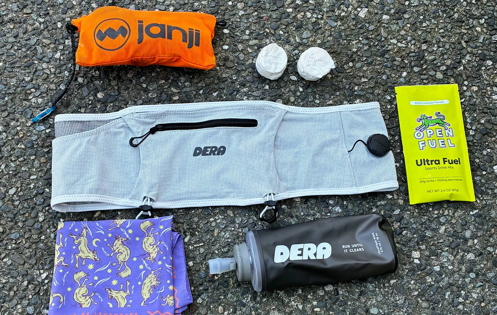
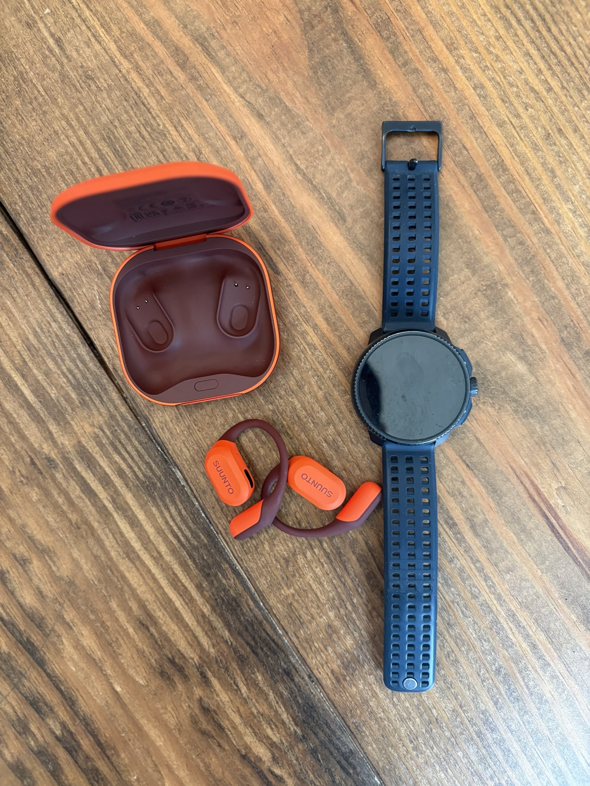
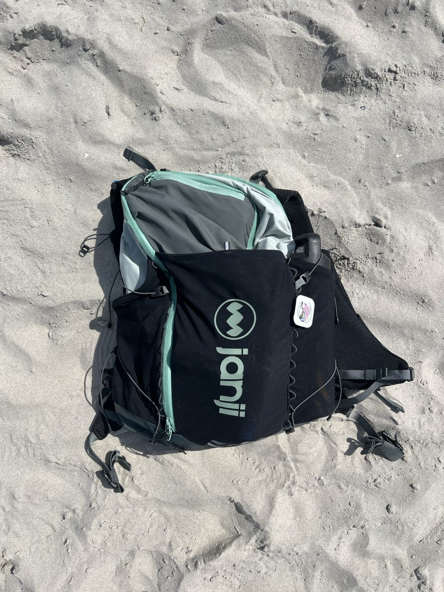

Gear Reviews
Gear Built For Real Life
Backpacks, apparel, accessories, and running gear tested through training, travel, work, and family life.
Latest Gear Reviews
3 posts

Dera B01 Trail Running Belt Review
Ryan tests the Dera B01 after hundreds of trail miles, covering its carrying capacity, no-bounce fit, storage, and dial-fit closure.
Read Review
Suunto Spark Review
Open-ear wireless headphones that deliver crisp audio while keeping runners aware of traffic, cyclists, and their surroundings.
Read Review
Janji Revy Pack
One do-it-all backpack for trails, travel, commuting, family adventures, and everyday life.
Read ReviewNo gear reviews match those filters yet.